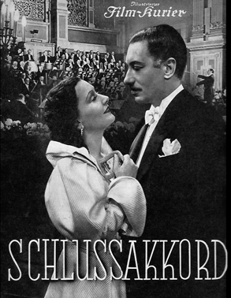
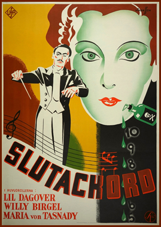
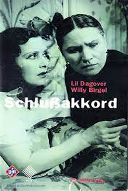

Schlußakkord
Maria von Tasnady
Lil Dagover
Peter Bosse
Albert Lippert
Erich Ponto
Paul Otto
Eva Tinschmann
Adoption Notary
Johannes Bergfeld
Christa Mattner
SYNOPSIS
At a New Year's Eve party in New York, Hanna Müller (Maria von Tasnady) is informed that her husband has been found dead in Central Park, presumably a suicide. The couple had left Germany because he had embezzled money. Meanwhile, the young son they left behind in an orphanage, Peter, is adopted by Erich Garvenberg (Willy Birgel), a famous conductor, and his wife Charlotte (Lil Dagover), who is having an affair with an astrologer, Gregor Carl-Otto. Hanna Müller goes to the orphanage to enquire after her son and Erich Garvenberg hires her as a nanny. They grow close through their love for the boy.
Charlotte Garvenberg learns of Müller's husband's criminality and fires her. Hanna returns to abduct her son, but Charlotte, who is being blackmailed by Carl-Otto, overdoses on morphine and dies. Hanna administered the drug and is suspected of murder, but at the trial a maid reveals that Charlotte had said she was committing suicide. Hanna and Erich Garvenberg can now marry.
Production took place from February to April 1936. Concert scenes were filmed at the Berliner Philharmonie in Kreuzberg, which would be destroyed in an air raid in 1944. The film had two premières, on 27 June 1936 at the annual cinema owners' convention in Dresden, and on 24 July 1936 at the Gloria-Palast in Berlin, after which it was placed on general release.
Pola Negri was offered the role of Charlotte Garvenberg but refused it saying she was too busy.
The film contrasts American with German culture and "a decadent past" (the Weimar Republic) with a "healthy, hopeful present" (the Third Reich) that reaffirms the values of the "old" (pre-Weimar) Germany. The interiors, by Erich Kettelhut, a co-designer on Metropolis, have symbolic force; in particular, Charlotte Garvenberg is surrounded by mirrors, suggesting narcissism.
In contrast Erich Garvenberg and Hanna are both guided by duty, and Garvenberg is a decisive leader and Hanna is able to draw strength from her rootedness in German culture and her healthy maternal feelings.


